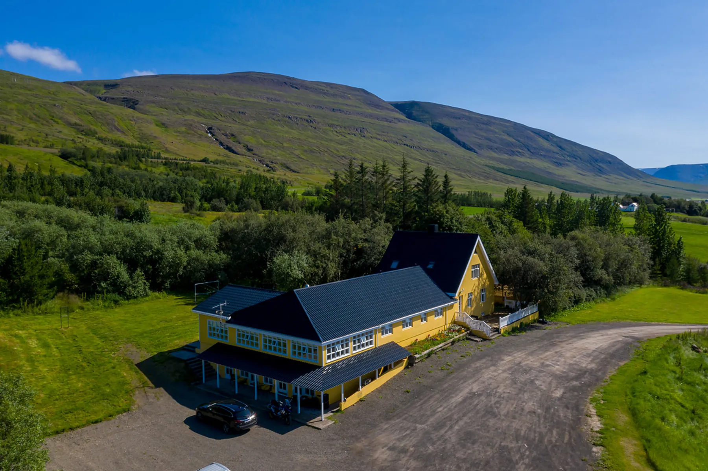

Leifsstaðir, Eyjafjarðarsveit
Staðsetning
Hótelið stendur á Leifsstöðum í Eyjafjarðarsveit, handan fjarðarins frá Akureyri. Miðbærinn er í 6 km fjarlægð og flugvöllurinn í 8 mínútna akstursfjarlægð.

Í nágrenninu
Norðurland
Aksturstímar og vegir: leiðaútreikningur OpenStreetMap, lesið 10. nóvember 2026. Leiðin að Goðafossi liggur um Vaðlaheiðargöng, þar sem er veggjald.
Leiðin hingað
Opnaðu leiðina í kortaforritinu þínu. Bílastæði við hótelið eru ókeypis.
Bókaðu beint
Bóka herbergi
Opnar örugga bókunarsíðu Hótel North í nýjum flipa.